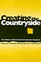
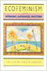
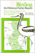
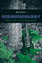
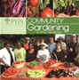
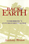

|
Animal
Passions and Beastly Virtues
Reflections on Redecorating Nature
Bekoff, Marc, foreword by Jane Goodall 320
pp • 6x9 • Fall 2005
paper 978-1-59213-348-2
cloth 978-1-59213-347-5
|
 |
City
and Environment
Boone, Christopher G. and Ali Modarres
240 pp • 6x9 • Spring 2006
paper 978-1-59213-284-3
cloth 978-1-59213-283-6
|
 |
In
Timber Country
Working People's Stories of Environmental Conflict and Urban Flight
Brown, Beverly A. 336 pp • 6x9 •
Spring 1995
paper 978-1-56639-273-0
cloth 978-1-56639-272-3 |

|
Sustainable Failures
Environmental Policy and Democracy in a Petro-dependent World
Cable, Sherry
242 pp • 6x9 • Fall 2012
paper 978-1-43990-900-3
cloth 978-1-43990-899-0
|
 |
Connection
on the Ice
Environmental Ethics in Theory and Practice
Clayton, Patti H., photographs by Charles Mason 352
pp • 6x9 • Spring 1998
paper 978-1-56639-616-5
cloth 978-1-56639-615-8
|
 |
Images
of Animals
Anthropomorphism and Animal Mind
Crist, Eileen
256 pp • 6x9 • Fall
1998
paper 978-1-56639-788-9
cloth 978-1-56639-656-1
|
 |
In Defense of Public Lands
The Case against Privatization and Transfer
Davis, Steven 292 pp • 5.25 x 8.5 • Spring
2018
paper 978-1-4399-1537-0
cloth 978-1-4399-1536-3 |
 |
Society
and Nature
Towards a Green Social Theory
Dickens, Peter 300 pp • 6x9 • Spring
1992
paper 978-0-87722-969-8
cloth 978-0-87722-968-1 |

|
Travels of William Bartram Reconsidered
Dion, Mark
112 pp • 8.5x12 • Spring 2010
cloth 978-0-6152-5748-8 |
|  |
Creating
the Countryside
The Politics of Rural and Environmental Discourse
edited by DuPuis, E. Melanie and Peter Vandergeest 360
pp • 6x9 • Fall 1995
paper 978-1-56639-360-7
cloth 978-1-56639-359-1
|
 |
Ecological
Politics
Ecofeminists and the Greens
Gaard, Greta 337 pp • 6x9 • Fall
1997
paper 978-1-56639-570-0
cloth 978-1-56639-569-4
|
 |
The Next Social Contract
Animals, the Anthropocene, and Biopolitics
Gabardi, Wayne
242 pp • 6x9 • Spring 2017
paper 978-1-4399-1412-0
cloth 978-1-4399-1411-3
|
|  |
Ecofeminism
edited by Gaard, Greta 304 pp • 6x9 •
Fall 1992
paper 978-0-87722-989-6
cloth 978-0-87722-988-9
|

|
Environmental Activism and the Urban Crisis
Baltimore, St. Louis, Chicago
Gioielli, Robert R.
224 pp • 6x9 • Spring 2014
paper 978-1-4399-0466-4
cloth 978-1-4399-0465-7 |
|
Marsh,
Meadow, Mountain
Natural Places of the Delaware Valley
edited by Harding, John J., illustrated by Carol Decker 320
pp • Fall 1985
paper 978-0-87722-401-3
cloth 978-0-87722-391-7 |
|  |
Birding
the Delaware Valley
A Comprehensive Guide to Birdwatching in Southeastern Pennsylvania,
Central and Southern New Jersey, and Northcentral Delaware
Harding, John J. and Justin J. Harding
223
pp • 5.5x8.25 • Spring 1986
paper 978-0-87722-182-1
cloth 978-0-87722-179-1 |
 |
Fishing
the Delaware Valley
Ingram, Jr., George H., Robert F. Marler, Jr. and Robert R. Smith,
foreword by Joe Humphreys 256 pp • 6x9
• Fall 1997
paper 978-1-56639-665-3
cloth 978-1-56639-588-5
|

|
Filling the Ark
Animal Welfare in Disasters
Irvine, Leslie
176 pp • 5.5x8.25 • Spring 2009
cloth 978-1-59213-1829-0
|
 |
Where Rivers Meet the Sea
The Political Ecology of Water
Kane,
Stephanie C.
246 pp • 6x9 • Fall 2012
paper 978-1-4399-0931-7
cloth 978-1-4399-0930-0
|
 |
American Dunkirk
The Waterborne Evacuation of Manhattan on 9/11
Kendra, James and Tricia Wachtendorf
194 pp • 5.5x8.25 • Spring 2016
paper 978-1-4399-0821-1
cloth 978-1-4399-0820-4
|

|
A Guide to the Great Gardens of the Philadelphia Region
Text by Levin, Adam, Photographs by Rob Cardillo
192 pp • 5.375x9.125 • Spring 2007
paper 978-1-59213-510-3
|
 |
Environmental
Ethics and Forestry
A Reader
edited by List, Peter C. 416 pp • 7x10
• Spring 2000
paper 978-1-56639-785-8
cloth 978-1-56639-784-1
|
 |
The
Wild Animal Story
edited by Lutts, Ralph H. 328 pp • 6x9
• Spring 1998
paper 978-1-56639-918-0
cloth 978-1-56639-593-9
|
 |
For
People and the Planet
Holism and Humanism in Environmental Ethics
Marietta, Jr., Don E., foreword by Holmes Rolston III 256
pp • 5.5x8.25 • Fall 1994
paper 978-1-56639-247-1
cloth 978-1-56639-246-4
|

|
Nature in Common?
Environmental Ethics and the Contested Foundations of Environmental Policy
Minteer, Ben A.
312 pp • 6x9 • Spring 2009
paper 978-1-59213-704-6
cloth 978-1-59213-703-9
|

|
Refounding Environmental Ethics
Pragmatism, Principle, and Practice
Minteer, Ben A.
212 pp • 6x9 • Fall 2011
paper 978-1-4399-0084-0
cloth 978-1-4399-0083-3
|
 |
Wildlife Crime
From Theory to Practice
edited by Moreto, William D. 310 pp • 6 x 9 • Spring
2018
paper 978-1-4399-1472-4
cloth 978-1-4399-1471-7 |
 |
Hikes
Around Philadelphia
Newman, Boyd and Linda Newman
224
pp • 5.5x8.25 • Spring 1997
paper 978-1-56639-530-4
cloth 978-1-56639-529-8
|
 |
Environmental
Change
Federal Courts and the EPA
O’Leary, Rosemary 280 pp • 5.5x8.25
• Fall 1993
paper 978-1-56639-396-6
cloth 978-1-56639-095-8
|

|
Greening Africana Studies
Linking Environmental Studies with Transforming Black Experiences
Patterson, Rubin
258 pp • 5.5x8.25 • Fall 2014
paper 978-1-43990-872-3
cloth 978-1-43990-871-6 |
 |
Ecomusicology
Rock, Folk, and the Environment
Pedelty, Mark
242 pp • 6x9 • Spring 2012
paper 978-1-4399-0712-2
cloth 978-1-4399-0711-5 |
 |
Community Gardening
A PHS Handbook
Pennsylvania Horticultural Society
132 pp • 8.5x8.5 • Fall 2011
paper 978-0-615-40150-8 |
 |
The PHS City Parks Handbook
Pennsylvania Horticultural Society
112 pp • 8.5x8.5 • Spring 2011
paper 978-0-615-26081-5 |
 |
Law
and the Environment
A Multidisciplinary Reader
edited by Percival, Robert V. and Dorothy C. Alevizatos 464
pp • 7x10 • Spring 1997
paper 978-1-56639-524-3
cloth 978-1-56639-523-6
|

|
Perry's Arcana
A Facsimile Edition with a Collation and Systematic Review
Petit, Richard E.
576 pp • 7x10 • Fall 2009
cloth 978-1-4399-0195-3
|
|
Sinking Chicago
Climate Change and the Remaking of a Flood-Prone Environment
Platt, Harold L. 304 pp • 6x9 • Spring
2018
paper 978-1-4399-1549-3
cloth 978-1-4399-1548-6 |
 |
Global
Energy Shifts
Fostering Sustainability in a Turbulent Age
Podobnik, Bruce 240 pp • 6x9 • Fall
2005
paper 978-1-59213-294-2
cloth 978-1-59213-293-5
|
 |
Rebuilding Community after Katrina
Transformative Education in the New Orleans Planning Initiative
edited by Reardon, Ken and John Forester
296 pp • 6x9 • Fall 2015
paper 978-1-4399-1100-6
cloth 978-1-4399-1099-3 |
|
Lawn People
How Grasses, Weeds, and Chemicals Make Us Who We Are
Robbins, Paul
208 pp • 6x9 • Spring 2007
paper 978-1-59213-579-0
cloth 978-1-59213-578-3
|
|
Environmental
Ethics
Duties to and Values in the Natural World
Rolston, III, Holmes 408 pp • Fall 1987
paper 978-0-87722-628-4
cloth 978-0-87722-501-0
|
 |
The Risk Society Revisited
Social Theory and Governance
Rosa, Eugene A., Ortwin Renn and Aaron M. McCright
264 pp • 6x9 • Fall 2013
paper 978-1-4399-0259-2
cloth 978-1-4399-0258-5 |
 |
Fishy
Business
Salmon, Biology, and the Social Construction of Nature
Scarce, Rik 272 pp • 6x9 • Fall
1999
paper 978-1-56639-729-2
cloth 978-1-56639-728-5
|
 |
Upstream/Downstream
Issues in Environmental Ethics
edited by Scherer, Donald 288 pp • Fall
1990
paper 978-1-56639-079-8
cloth 978-0-87722-747-2 |

|
Dangerous Trade
Histories of Industrial Hazard across a Globalizing World
edited by Sellers, Christopher and Joseph Melling
228 pp • 6x9 • Fall 2011
paper 978-1-4399-0469-5
cloth 978-1-4399-0468-8
|
 |
Challenging
the Chip
Labor Rights and Environmental Justice in the Global Electronics
Industry
edited by Smith, Ted, David A. Sonnenfeld and David Naguib Pellow,
foreword by Jim Hightower
376 pp � 6x9 � Spring 2006
paper 978-1-59213-330-7
cloth 978-1-59213-329-1
|
 |
Generation
Games
Genetic Engineering and the Future for Our Lives
Spallone, Pat 343 pp • 6x9 • Spring
1992
paper 978-0-87722-967-4
cloth 978-0-87722-966-7 |
 |
The Magic of Children's Gardens
Inspiring Through Creative Design
Tai, Lolly, with a Foreword by Jane L. Taylor
376 pp • 8x10 • Spring 2017
cloth 978-1-4399-1447-2
|

|
Exploiting the Wilderness
An Analysis of Wildlife Crime
Warchol, Greg L.
210 pp • 6x9 • Fall 2017
paper 978-1-4399-1367-3
cloth 978-1-4399-1366-6
|
 |
Nature's
Keeper
Wenz, Peter S. 240 pp • 5.5x8.25 •
Spring 1996
paper 978-1-56639-428-4
cloth 978-1-56639-427-7
|
|  |
Back
to Earth
Tomorrow's Environmentalism
Weston, Anthony 216 pp • 5.5x8.25 •
Fall 1994
paper 978-1-56639-237-2
cloth 978-1-56639-236-5
|